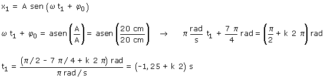
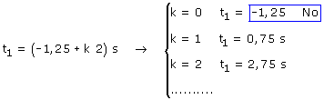

a)
|
Ecuaciones del movimiento:
|
|
Parámetros A = 20 cm, ω = π rad/s (T = 2π/ω = 2 s) φ0 = 7π/4 rad |

Datos: x1 = A , Incógnita: t1

Se obtiene una única serie de valores, separados por el valor del período (2 s) porque, en el extremo, el móvil tiene una única velocidad: 0

La serie de tiempos corresponde a una fase 0.5π: el móvil estará inmóvil en el extremo derecho del recorrido (x = 20 cm), excepto en la primera oscilación
Valores del tiempo: t1 = 0,75 s, 2,75,... s